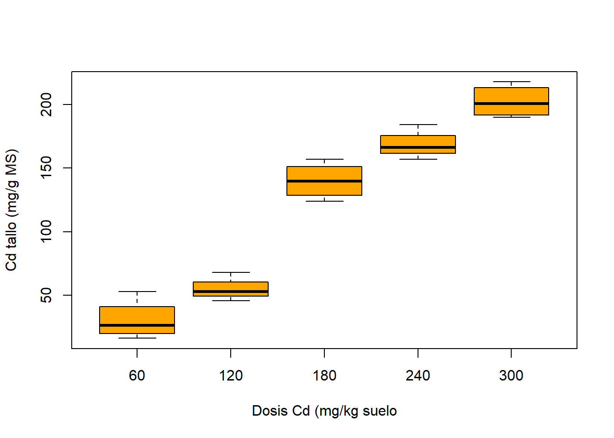
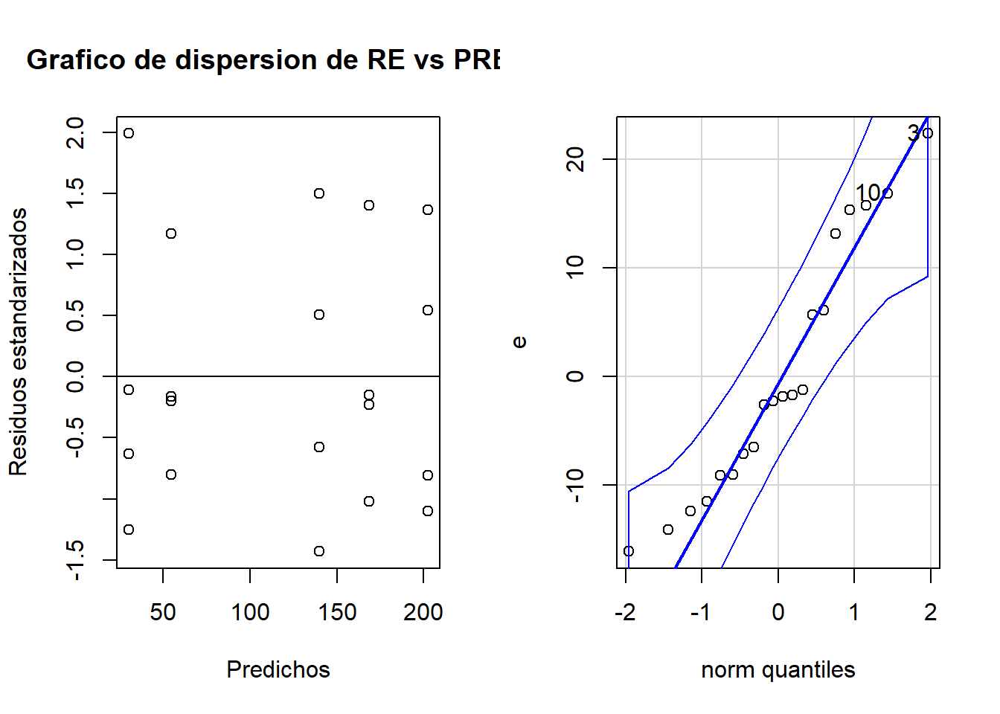

Diferencia de medias para muestras normales con varianzas desconocidas
Coriandrum sativum ha sido cultivada históricamente en nuestro país, pero los productores quieren saber si les convendría cambiar por el cultivo de C. tordylium. El INTA lleva a cabo un estudio a fin de comparar el rendimiento de ambas especies. De las áreas sembradas con cada una de ellas, se eligieron 15 parcelas al azar, se cosecharon en su totalidad y se determinó el rendimiento por cromatografía gaseosa (g/cm3).
En base a las observaciones realizadas, ¿podría el INTA recomendar a los productores cambiar de especie con un nivel de significación del 5%?
var.test(Rendimiento~Especie, data=df_coriandrum, alternative ="two.sided") # es una prueba bilateral
F test to compare two variances
data: Rendimiento by Especie
F = 0.86089, num df = 39, denom df = 39, p-value = 0.6423
alternative hypothesis: true ratio of variances is not equal to 1
95 percent confidence interval:
0.4553221 1.6276938
sample estimates:
ratio of variances
0.8608862
Vuelvo a las Hipotesis de problema:
Ho:\(\mu_{ct} - \mu_{cs} = 0\)
Ha:\(\mu_{ct} - \mu_{cs}> 0\)
Con el parámetro var.equal se especifica si las varianzas de las poblaciones son similares o no, por ejemplo var.equal= T indica que las varianzas de ambas poblaciones son iguales.
En alternative se especifica el tipo de prueba de hipótesis.
Two Sample t-test
data: Rendimiento by Especie
t = -2.059, df = 78, p-value = 0.9786
alternative hypothesis: true difference in means between group C_sativum and group C_tordylium is greater than 0
95 percent confidence interval:
-0.05511309 Inf
sample estimates:
mean in group C_sativum mean in group C_tordylium
0.200000 0.230475
Si se desea obtener el límite inferior y superior del intervalo de confianza, debe correrse nuevamente la prueba, pero seleccionando la opción bilateral (alternative= two.sided)
¿Conclusiones?
Diferencia de medias para muestras pareadas
En un trabajo de investigación se utilizaron 16 parcelas experimentales con dos plantas de avena cada una con el fin de estudiar el efecto promotor del crecimiento de una solución de potasio. En cada parcela, una planta elegida al azar fue tratada con la solución de potasio y la otra no (control).
tratamiento altura
1 control 22.37
2 control 23.37
3 control 28.65
4 control 28.31
5 control 23.53
6 control 25.70
7 control 26.46
8 control 20.81
9 control 25.58
10 control 26.41
11 control 24.80
12 control 22.13
13 control 27.95
14 control 23.64
15 control 21.31
16 control 27.09
17 tratamiento 21.46
18 tratamiento 23.02
19 tratamiento 21.18
20 tratamiento 27.81
21 tratamiento 26.78
22 tratamiento 29.68
23 tratamiento 25.32
24 tratamiento 28.03
25 tratamiento 26.30
26 tratamiento 29.40
27 tratamiento 30.79
28 tratamiento 24.81
29 tratamiento 24.02
30 tratamiento 22.08
31 tratamiento 25.25
32 tratamiento 20.61
Código
t.test(df2_avena$altura~df2_avena$tratamiento, alternative ="greater", paired = T)
Paired t-test
data: df2_avena$altura by df2_avena$tratamiento
t = -0.50591, df = 15, p-value = 0.6899
alternative hypothesis: true difference in means is greater than 0
95 percent confidence interval:
-2.352575 Inf
sample estimates:
mean of the differences
-0.526875
Pruebas no paramétricas
Test de Mann-Whitney-Wilcoxon
En un estudio efectuado a fin de caracterizar la calidad y producción de aceite de oliva en la provincia de Catamarca de la República Argentina, se estudiaron dos de las variedades más conocidas. Para ello, se tomaron muestras de aceitunas de distintos ejemplares a una misma altura de copa de aproximadamente dos metros, y de todos los puntos cardinales de la misma, a efectos de evitar las variaciones debidas a la posición del fruto en la planta. Las aceitunas fueron secadas en estufa y se les determinó su contenido porcentual de aceite por extracción química.
Wilcoxon rank sum exact test
data: Arbequina and Carolea
W = 100, p-value = 1.083e-05
alternative hypothesis: true location shift is not equal to 0
Test para la mediana
Código
library(RVAideMemoire)# Paquete que contiene funciones misceláneas útiles en bioestadísticaaceite<-read_excel("aceite.xlsx")mood.medtest(Aceite~Variedad,data=aceite)# Realiza el test de la mediana de Mood
Mood's median test
data: Aceite by Variedad
p-value = 1.083e-05
Concluimos que rechazamos la hipótesis de la igualdad de las medianas de las dos variedades.
ANOVA
Interesa estudiar la capacidad detoxificadora del césped E. ophiuroides en suelos contaminados con Cd. A 20 macetas con césped se les asignó una de 5 dosis de Cd diferente (60, 120, 180, 240 y 300 mg Cd kg-1); 4 macetas por dosis. Se midió el Cd acumulado por la planta (expresado como mg Cd kg-1 materia seca)
Código
#cargamos los datoscadmio <-read.csv2("cadmio.csv")
Código
boxplot(cd_tallo~dosis_cd,data=cadmio,xlab="Dosis Cd (mg/kg suelo",ylab="Cd tallo (mg/g MS)",col="orange")

Hipótesis estadísticas
Ho \(\mu_{60} = \mu_{120} = \mu_{180}= \mu_{240}= \mu_{300}\)
Ha \(\mu_{i} \neq \mu\)
Supuestos
Las muestras deben ser aleatorias y las observaciones independientes
Las varianzas de las subpoblaciones deben ser iguales (homocedasticidad)
res<-as.data.frame(res)par(mfrow =c(1, 2))plot(pre, re, xlab="Predichos", ylab="Residuos estandarizados",main="Grafico de dispersion de RE vs PRED" )abline(0,0)qqPlot(e)

[1] 3 10
Por prueba de hipótesis
Código
shapiro.test(e)
Shapiro-Wilk normality test
data: e
W = 0.92721, p-value = 0.1364
Código
library(moments)agostino.test(e)
D'Agostino skewness test
data: e
skew = 0.48189, z = 1.05937, p-value = 0.2894
alternative hypothesis: data have a skewness
Se realizó una intervención educativa innovadora para mejorar el rendimiento de los estudiantes. Dentro de los grupos de clasificación, el A es el grupo de control y los restantes, B y C, son los grupos con distintas innovaciones.
---title: "Análisis Univariado"author: "Pamela E. Pairo"lang: esdescription: | Pruebas paramétricas y no paramétricasformat: html: theme: flatly code-fold: show code-tools: true toc: true toc-location: left---```{r setup, include=FALSE}knitr::opts_chunk$set(echo =TRUE)knitr::opts_chunk$set(message =FALSE)knitr::opts_chunk$set(warning =FALSE)library(tidyverse)library("readxl")library(car)```# Diferencia de medias para muestras normales con varianzas desconocidas_Coriandrum sativum_ ha sido cultivada históricamente en nuestro país, pero los productores quieren saber si les convendría cambiar por el cultivo de _C. tordylium_. El INTA lleva a cabo un estudio a fin de comparar el rendimiento de ambas especies. De las áreas sembradas con cada una de ellas, se eligieron 15 parcelas al azar, se cosecharon en su totalidad y se determinó el rendimiento por cromatografía gaseosa (g/cm3).En base a las observaciones realizadas, ¿podría el INTA recomendar a los productores cambiar de especie con un nivel de significación del 5%?```{r}df_coriandrum <-read.delim2("Coriandrum.txt")glimpse(df_coriandrum)```Cambiamos el tipo de dato de la variable `Rendimiento````{r}df_coriandrum$Rendimiento <-as.numeric(df_coriandrum$Rendimiento)```Estadística Descriptiva```{r}summary(df_coriandrum)``````{r}boxplot(Rendimiento~Especie,data=df_coriandrum,xlab="Especie",ylab="Rendimiento",col="orange",border="brown")```*Planteo de Hipótesis:*Ho:$\mu_{ct} - \mu_{cs} = 0$Ha:$\mu_{ct} - \mu_{cs}> 0$*¿Conocemos las varianzas poblacionales?*Hipotesis para las varianzas poblacionalesHo $\frac{\sigma^2_{ct}}{\sigma^2_{cs}} =1$ H1 $\frac{\sigma^2_{ct}}{\sigma^2_{cs}} \neq 1$ ```{r}var.test(Rendimiento~Especie, data=df_coriandrum, alternative ="two.sided") # es una prueba bilateral```Vuelvo a las Hipotesis de problema:Ho:$\mu_{ct} - \mu_{cs} = 0$Ha:$\mu_{ct} - \mu_{cs}> 0$Con el parámetro `var.equal` se especifica si las varianzas de las poblaciones son similares o no, por ejemplo `var.equal= T` indica que las varianzas de ambas poblaciones son iguales.En `alternative` se especifica el tipo de prueba de hipótesis.```{r}t.test(Rendimiento~Especie , data=df_coriandrum, alternative ="greater", var.equal = T) #varianzas poblacionales iguales```Si se desea obtener el límite inferior y superior del intervalo de confianza, debe correrse nuevamente la prueba, pero seleccionando la opción bilateral (`alternative= two.sided`)¿Conclusiones?# Diferencia de medias para muestras pareadasEn un trabajo de investigación se utilizaron 16 parcelas experimentales con dos plantas de avena cada una con el fin de estudiar el efecto promotor del crecimiento de una solución de potasio. En cada parcela, una planta elegida al azar fue tratada con la solución de potasio y la otra no (control).```{r}df_avena <-read_excel("avena.xlsx")glimpse(df_avena)```$\LARGE X_d=$ diferencia en el crecimiento de una avena tratada y una avena controlHipotesisHo $\mu_d = 0$Ha $\mu_d > 0$```{r}df_avena <-df_avena %>%mutate(diferencia= tratamiento-control)``````{r}qqPlot(df_avena$diferencia)``````{r}df2_avena <-stack(df_avena[2:3]) |>relocate (tratamiento=ind) |>rename(altura=values)head(df2_avena, 32)``````{r}t.test(df2_avena$altura~df2_avena$tratamiento, alternative ="greater", paired = T)```# Pruebas no paramétricas## Test de Mann-Whitney-WilcoxonEn un estudio efectuado a fin de caracterizar la calidad y producción de aceite de oliva en la provincia de Catamarca de la República Argentina, se estudiaron dos de las variedades más conocidas. Para ello, se tomaron muestras de aceitunas de distintos ejemplares a una misma altura de copa de aproximadamente dos metros, y de todos los puntos cardinales de la misma, a efectos de evitar las variaciones debidas a la posición del fruto en la planta. Las aceitunas fueron secadas en estufa y se les determinó su contenido porcentual de aceite por extracción química.```{r}# Cargamos los datosArbequina=c(34.5 , 20.1 , 21.8 , 18.2 , 19.5 , 20.2 , 22.5 , 23.9 , 22.1 , 24.2 )Carolea=c(16.4 , 14.8 , 17.8 , 12.3 , 11.9 , 15.5 , 13.4 , 16, 15.8 , 16.2 )```Realizamos la prueba de normalidad```{r}shapiro.test(Arbequina) # Testea la normalidad de los datosshapiro.test(Carolea ) # Testea la normalidad de los datos``````{r}library(reshape2)myList <-list(Arbequina, Carolea)df <-melt(myList)qplot(factor(L1), value, data = df, geom ="boxplot", xlab="Especies")```$\theta_A$ a la mediana poblacional (posición central) del contenido de aceite de la variedad Arbequina.$\theta_C$ a la mediana poblacional (posición central) del contenido de aceite de la variedad Carolea.HipótesisHo $\theta_A = \theta_C$Ha $\theta_A \neq \theta_C$```{r}wilcox.test(Arbequina, Carolea,alternative ="two.sided")```## Test para la mediana```{r}library(RVAideMemoire)# Paquete que contiene funciones misceláneas útiles en bioestadísticaaceite<-read_excel("aceite.xlsx")mood.medtest(Aceite~Variedad,data=aceite)# Realiza el test de la mediana de Mood```Concluimos que rechazamos la hipótesis de la igualdad de las medianas de las dos variedades.# ANOVAInteresa estudiar la capacidad detoxificadora del césped_E. ophiuroides_ en suelos contaminados con Cd. A 20 macetas con césped se les asignó una de 5 dosis de Cd diferente (60, 120, 180, 240 y 300 mg Cd kg-1); 4 macetas por dosis. Se midió el Cd acumulado por la planta (expresado como mg Cd kg-1 materia seca)```{r}#cargamos los datoscadmio <-read.csv2("cadmio.csv")``````{r}boxplot(cd_tallo~dosis_cd,data=cadmio,xlab="Dosis Cd (mg/kg suelo",ylab="Cd tallo (mg/g MS)",col="orange")```Hipótesis estadísticasHo $\mu_{60} = \mu_{120} = \mu_{180}= \mu_{240}= \mu_{300}$Ha $\mu_{i} \neq \mu$### Supuestos- Las muestras deben ser aleatorias y las observacionesindependientes- Las varianzas de las subpoblaciones deben ser iguales (homocedasticidad) - La distribución de cada subpoblación es normalDefinimos el modelo:```{r}modelo<-aov(cd_tallo ~factor(dosis_cd), data=cadmio)summary(modelo)```Primero, se chequean los supuestosCalculamos los residuos del modelo```{r}e<-resid(modelo) # residuosre<-rstandard(modelo) #residuos estandarizadospre<-predict(modelo) #predichosres<-cbind(cadmio$dosis_cd,cadmio$cd_tallo,pre,e,round(re,2))colnames(res)<-c("dosis Cd", "Cd tallo", "Predichos", "Residuos", "residuos std") res``````{r}res<-as.data.frame(res)par(mfrow =c(1, 2))plot(pre, re, xlab="Predichos", ylab="Residuos estandarizados",main="Grafico de dispersion de RE vs PRED" )abline(0,0)qqPlot(e)```Por prueba de hipótesis```{r}shapiro.test(e) ``````{r}library(moments)agostino.test(e)```Prueba de homogeneidad de varianzas```{r}library(car)cadmio$dosis_cd <-as.factor(cadmio$dosis_cd)leveneTest(cd_tallo ~ dosis_cd, data=cadmio)```**El test de Levene no rechaza la hipótesis nula de homocedasticidad.**```{r}#modelo<-aov(cd_tallo ~ factor(dosis_cd), # data=cadmio)summary(modelo)```Comparaciones a posterioriIC para la diferencia de dos medias: equivale a una PH para dif de medias (¿el cero pertenece al IC?).```{r}TukeyHSD(modelo)``````{r}plot(TukeyHSD(modelo))```# Test de Kruscal-Wallis (no paramétrico)Se realizó una intervención educativa innovadora para mejorar el rendimiento de los estudiantes. Dentro de los grupos de clasificación, el A es el grupo de control y los restantes, B y C, son los grupos con distintas innovaciones.```{r}Puntajes=c(13,27,26,22,28,27,43,35,47,32,31,37,33,33,33,26,44,33,54)Grupo=as.factor(c(rep("A",6), rep("B", 6), rep("C", 7)))Rendimiento=data.frame (Grupo, Puntajes)``````{r}library(pgirmess)ggplot(Rendimiento,aes(x=Grupo,y=Puntajes,fill=Grupo)) +geom_boxplot() +xlab("") +scale_fill_brewer(palette="Pastel1")# Produce boxplotsgrupoA=Rendimiento[Rendimiento$Grupo=="A",2]grupoB=Rendimiento[Rendimiento$Grupo=="B",2]grupoC=Rendimiento[Rendimiento$Grupo=="C",2]``````{r}shapiro.test(grupoA)shapiro.test(grupoB)shapiro.test(grupoC)```Ho Los tres grupos tienen la misma posición para la variable de estudio dada por el puntajeHa al menos un grupo tiene diferente posición para la variable en estudio dada por el puntaje.```{r}kruskal.test(Puntajes, Grupo)# Realiza el test de Kruskal Wallis```Comparación múltiple entre tratamientos luego del test de Kruskal Wallis```{r}kruskalmc(Puntajes~Grupo )```